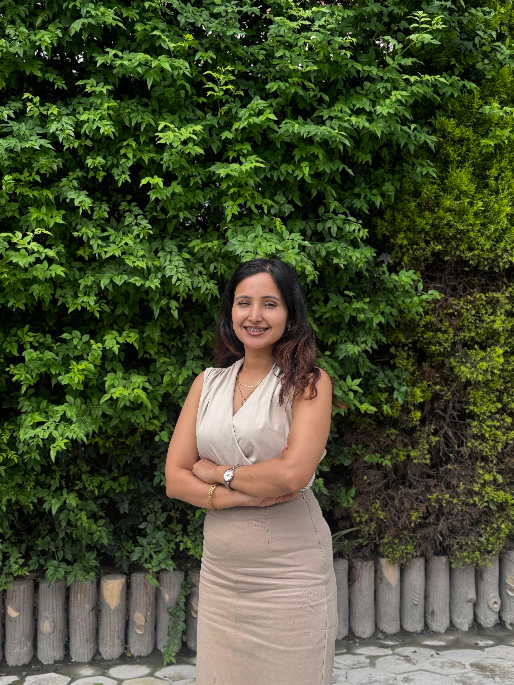

Accounting & Financial Management
Bookkeeping, financial statements, and cash flow monitoring to maintain clarity and control.
StrategiQ Capital Advisory • Kathmandu, Nepal
Arju Sanjel works with StrategiQ Capital Advisory to support businesses, entrepreneurs, investors, and development-focused projects through transparent, client-centered financial and investment advisory.
Boutique financial advisory and investment management firm focused on long-term value creation.
Executive Summary

Arju Sanjel is a highly accomplished financial leader and strategic advisor with over a decade of specialized, hands-on experience driving high-impact financial operations, corporate compliance, and investment initiatives.
Throughout her career, she has bridged the gap between complex global financial standards and localized business ecosystems. Her versatile track record spans core financial disciplines, corporate structuring, and cross-border fund stewardship, serving successfully as an Investment Manager for diverse foreign funds as well as leading local businesses in Nepal.
Her deep technical acumen, analytical precision, and regulatory expertise are backed by premier international and national academic achievements:
Through StrategiQ Capital Advisory—a boutique financial advisory and investment management firm based in Kathmandu—she pairs rigorous financial discipline with positive economic and environmental impacts. She remains deeply committed to developing strategic projects that promote the overall betterment of Nepal and support a thriving, resilient green sector.[cite: 1]
Vision
Enabling clients to grow and succeed while contributing to sustainable development.
Mission
Services Overview
Tailored solutions for each client’s goals, risk profile, and long-term growth plans.
Bookkeeping, financial statements, and cash flow monitoring to maintain clarity and control.
Evaluation of financial controls, compliance practices, and operational risks.
Portfolio advisory, stock guidance, fund management, private equity, pre-IPO investments, and long-term investment planning.
Strategy planning, pitch deck preparation, fundraising support, and capital structure advisory.
Corporate restructuring, due diligence, cash flow optimization, and developing projects for Nepal’s betterment and green sector initiatives.
How We Work
Understanding your business, financial goals, challenges, current processes, investment strategies, and risk exposures.
Preparing a tailored strategy proposal with financial practices, investment options, audit priorities, and growth initiatives.
Supporting implementation, monitoring progress, and adjusting recommendations to optimize performance and impact.
Reviewing outcomes against targets, identifying improvements, and refining strategies for better efficiency and returns.
Providing ongoing advisory, market insights, and strategic guidance for sustainable growth and long-term value.
Target Clients
Why Choose StrategiQ
StrategiQ combines expertise across finance, audit, investment, and advisory with personalized strategies, flexible engagement models, and a strong focus on sustainable development in Nepal.
Get in Touch
For financial advisory, investment guidance, business growth planning, or sustainable project support, reach out directly.